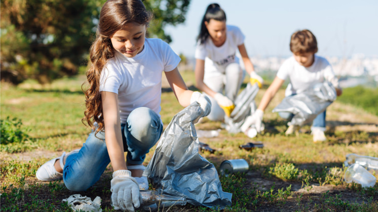
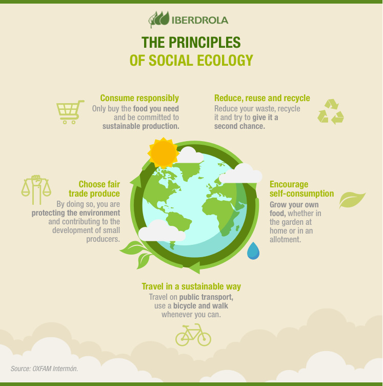

RECYCLING FOR KIDS
The game of recycling or how to make children aware
Today learning how to recycle is easier and more fun than ever for kids. There are numerous games and activities related to recycling that are designed to teach children to generate less waste, separate it and reuse it, helping to reinforce their ecological values and commitment to the environment.
It is easier for children to learn to recycle if it is done through games, songs and handicrafts.
Someday our children will receive the keys to the planet and will have to take care of it. They will have our future in their hands, and that of millions of species that will then depend on the sensitivity of their fingers to prevent their almost inevitable extinction. We must therefore stop the next generation from making the same mistakes that we have made and educate them to build a better, more sustainable world.
THE LOW RECYCLING RATE AND THE IMPORTANCE OF AWARENESS RAISING
We are recycling more and more, but it's not enough. The latest data from the Organisation for Economic Co-operation and Development (OECD), a body made up of 36 of the world's richest countries serve as a warning of the situation: the members of this select club recycle, on average, barely 36% of their municipal waste. At an individual level only seven states exceeded 50% and regions such as OECD-Europe were within six points of the approved rate, with 44%.
In the meantime, waste is gaining ground. The World Bank (WB) warned in 2018 that urban areas produce more than 2 billion tons of solid waste annually, a figure that could increase by 70% by 2050 if we do not take urgent action. The WB itself urges countries to improve their waste management and generate less waste through consumer education and support for recycling programmes.
